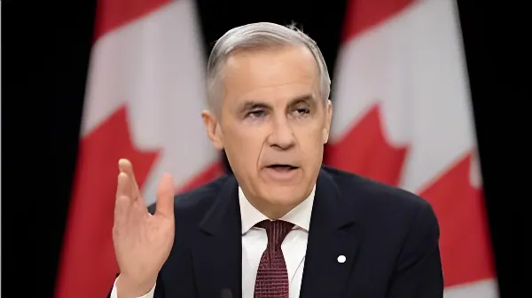

Depuis février 2025, le Canada subit une offensive commerciale sans précédent de la part de son voisin américain. Entre droits de douane généralisés, menaces sur sa souveraineté et un contexte électoral bouleversé, le pays s'est engagé dans une redéfinition profonde de ses alliances économiques — et de son identité nationale.
La crise commerciale entre Ottawa et Washington s'est enclenchée dès le 1er février 2025, lorsque le président Donald Trump a signé un décret imposant des droits de douane de 25 % sur la quasi-totalité des importations canadiennes, avec un taux réduit de 10 % sur l'énergie. Le Canada, qui exporte 60 % du pétrole brut consommé aux États-Unis et 85 % de son électricité importée, s'est retrouvé en première ligne d'une guerre commerciale aux répercussions globales.
Loin de se limiter à des enjeux économiques, la confrontation a pris une dimension géopolitique particulièrement tendue : Trump a multiplié les déclarations visant à remettre en cause la souveraineté du Canada, allant jusqu'à qualifier son premier ministre de « gouverneur » et à publier des cartes représentant le Canada comme le 51e État américain. Ce faisant, il a paradoxalement catalysé un sursaut nationaliste canadien qui allait transformer le paysage politique du pays.
Trump signe le décret imposant 25 % de droits sur les importations canadiennes (10 % sur l'énergie). Trudeau annonce immédiatement des contre-tarifs.
Justin Trudeau démissionne. Mark Carney est désigné chef libéral le 9 mars et prête serment comme premier ministre le 14 mars. Il déclenche les élections le 23 mars.
Les libéraux de Carney remportent les élections fédérales avec 169 sièges. La menace Trump a totalement retourné l'opinion, les conservateurs étant donnés largement favoris quelques mois plus tôt.
Les droits de douane américains sur l'acier et l'aluminium passent à 50 % pour tous les pays, Canada inclus.
Carney annonce un fonds d'aide de 5 milliards de dollars pour les secteurs touchés. Il lève également les contre-tarifs sur les produits couverts par l'ACEUM pour relancer les négociations.
Trump menace d'imposer des droits de douane de 100 % si le Canada va de l'avant avec un accord commercial avec la Chine. Ottawa précise que cet accord ne constitue pas un libre-échange.
La Cour suprême américaine juge illégaux les tarifs imposés via l'IEEPA. Washington maintient néanmoins leur application le temps des recours.
Les droits de douane sur l'acier, l'aluminium et le cuivre sont modifiés : ils s'appliquent désormais sur la valeur en douane totale depuis le 6 avril 2026. La révision de l'ACEUM approche (juillet 2026).
La dynamique politique canadienne a été radicalement bouleversée par la crise tarifaire. En début d'année 2025, le Parti conservateur de Pierre Poilievre creusait un écart de plus de 20 points dans les sondages sur les libéraux, alors fragilisés par neuf ans au pouvoir. La démission de Justin Trudeau en janvier 2025 et l'arrivée de Mark Carney — économiste de renommée internationale, ancien gouverneur de la Banque du Canada et de la Banque d'Angleterre — ont coïncidé avec l'intensification des attaques de Trump contre la souveraineté canadienne.
Le résultat des élections du 28 avril 2025 a stupéfié les observateurs : les libéraux ont remporté 169 sièges contre 144 pour les conservateurs, Poilievre perdant même son propre siège dans la circonscription de Carleton. Le NPD s'est effondré à 7 sièges, sous le seuil de reconnaissance parlementaire. En avril 2026, à la suite d'élections partielles, le gouvernement Carney est devenu majoritaire avec 174 sièges.
La stratégie de Mark Carney a oscillé entre affirmation souveraine et pragmatisme diplomatique. D'un côté, il a posé des lignes rouges claires — la gestion de l'offre agricole « n'est pas sur la table » — tout en répondant coup pour coup sur les secteurs stratégiques (acier, aluminium, automobiles). De l'autre, en août 2025, il a levé les contre-tarifs sur les produits couverts par l'ACEUM afin de relancer des négociations dans une atmosphère moins conflictuelle, s'attirant les foudres du syndicat Unifor.
Sur le plan diplomatique, Carney a cherché à diversifier les partenariats commerciaux canadiens. Sa visite à Pékin et les négociations tarifaires avec la Chine — bien qu'Ottawa ait démenti tout projet de libre-échange — ont provoqué la colère de Trump, qui a brandi la menace de droits de douane à 100 %. Cette séquence illustre le dilemme structurel du Canada : réduire sa dépendance commerciale aux États-Unis sans provoquer d'escalade avec son principal partenaire.
| Secteur | Tarif américain | Réponse canadienne |
|---|---|---|
| Acier & aluminium | 50 % (juin 2025) | Contre-tarifs maintenus |
| Automobiles | 25 % | Contre-tarifs sur véhicules non conformes ACEUM |
| Bois d'œuvre | 45 % (oct. 2025) | Fonds d'aide sectoriel |
| Produits ACEUM | Variable | Contre-tarifs levés (sept. 2025) |
« Quand nous sommes menacés, nous nous battons. »
— Mark Carney, discours de victoire électorale, Ottawa, 28 avril 2025« La gestion de l'offre fait partie de notre souveraineté économique. »
— Mark Carney, sur X, lors des négociations tarifaires, 2025Le 1er juillet 2026, la clause de révision de l'Accord Canada–États-Unis–Mexique (ACEUM) s'activera. Les trois pays signataires devront alors confirmer ou renégocier l'accord pour dix années supplémentaires. Cette échéance constitue le principal enjeu commercial de l'année : Trump pourrait en profiter pour arracher de nouvelles concessions sur la gestion de l'offre, les règles d'origine ou l'accès aux marchés publics. Carney a indiqué qu'il ne précipiterait pas la conclusion d'un mauvais accord, estimant qu'un partenariat économique et sécuritaire global devrait être conclu avant cette révision.
En attendant, les contours de la relation canado-américaine restent flous. Le taux tarifaire moyen réel appliqué aux exportations canadiennes vers les États-Unis s'établit, selon Carney, à 5,6 % — soit le plus favorable du monde — mais des pans entiers de l'économie (acier, aluminium, automobile, bois d'œuvre) restent soumis à des droits punitifs. La décision de la Cour suprême américaine déclarant illégaux les tarifs IEEPA en février 2026 n'a pour l'instant pas suffi à lever les taxes, Washington ayant fait appel.
La crise tarifaire de 2025–2026 marque un moment charnière pour le Canada. Elle a révélé à la fois la profondeur de la dépendance commerciale du pays envers les États-Unis — qui absorbent 75 % de ses exportations — et la capacité de la société canadienne à se ressaisir collectivement face à une menace existentielle. La montée d'un sentiment national fort, la recomposition du paysage politique et la recherche active de nouveaux partenaires commerciaux dessinent les contours d'un Canada qui, sous la pression d'un voisin imprévisible, entreprend de repenser la géographie de ses intérêts. L'issue des négociations de l'ACEUM à l'été 2026 dira si cette transformation est durable — ou simplement conjoncturelle.
Since February 2025, Canada has faced a wave of sweeping US tariffs that triggered a political earthquake at home, forced a radical rethink of its trade partnerships, and placed the question of Canadian sovereignty at the very heart of public debate. The country's response — firm yet pragmatic — under newly elected Prime Minister Mark Carney, has redefined what it means to be Canada's neighbour.
The Canada–US trade crisis began in earnest on 1 February 2025, when President Donald Trump signed an executive order imposing 25% tariffs on virtually all Canadian imports, with a reduced 10% rate on energy. Canada, which supplies 60% of US crude oil imports and 85% of its imported electricity, found itself squarely in the crosshairs of a commercial offensive with global repercussions.
Beyond economics, the confrontation quickly took on a geopolitical dimension. Trump repeatedly questioned Canada's sovereignty, referring to its Prime Minister as "Governor Carney" and circulating doctored maps showing Canada as the 51st US state. This rhetoric paradoxically ignited a surge of Canadian nationalism that would reshape the country's political landscape.
Trump signs executive order imposing 25% tariffs on Canadian goods (10% on energy). Trudeau immediately announces retaliatory measures.
Trudeau resigns. Mark Carney becomes Liberal leader on 9 March and is sworn in as PM on 14 March. He calls a snap election on 23 March.
Carney's Liberals win the federal election with 169 seats. The Trump threat entirely reversed polling trends — Conservatives had led by 20+ points months earlier.
US tariffs on steel and aluminium raised to 50% globally, Canada included.
Carney announces a C$5bn aid fund for affected sectors. He also removes retaliatory tariffs on CUSMA-compliant goods to ease negotiation conditions.
Trump threatens 100% tariffs if Canada proceeds with a trade deal with China. Ottawa clarifies this is not a free-trade agreement.
US Supreme Court rules IEEPA-based tariffs are illegal. Washington appeals; tariffs remain in force pending outcome.
Steel, aluminium and copper tariffs restructured: applied on full customs value from 6 April. CUSMA review deadline looms (1 July 2026).
The tariff crisis upended Canadian domestic politics in ways that few would have predicted. At the start of 2025, Pierre Poilievre's Conservatives led the Liberals by more than 20 points in polls, after nine years of Liberal government under Justin Trudeau. The arrival of Mark Carney — former Governor of both the Bank of Canada and the Bank of England — and Trump's escalating attacks on Canadian sovereignty combined to transform the electoral battlefield.
The result of the 28 April 2025 vote shocked observers: the Liberals won 169 seats to 144 for the Conservatives, with Poilievre himself losing his Carleton riding. The NDP collapsed to just 7 seats, below the threshold for parliamentary recognition. By April 2026, following by-elections and floor crossings, the Carney government became a majority with 174 seats.
Mark Carney's strategy has combined assertive sovereignty with diplomatic realism. He drew clear red lines — supply management is "part of our economic sovereignty and is not on the table" — while responding sector-by-sector with retaliatory tariffs on steel, aluminium and automobiles. Yet in August 2025, he removed counter-tariffs on CUSMA-compliant goods to restart negotiations in a less confrontational atmosphere, drawing sharp criticism from Unifor, Canada's largest private-sector union.
Diplomatically, Carney has sought to diversify Canada's trade partnerships. His Peking visit and subsequent tariff negotiations with China — denied to be a free-trade agreement by Ottawa — provoked Trump's threat of 100% tariffs. This episode crystallises Canada's structural dilemma: reducing US trade dependency without provoking further escalation with its largest partner.
| Sector | US tariff | Canada's response |
|---|---|---|
| Steel & aluminium | 50% (June 2025) | Counter-tariffs maintained |
| Automobiles | 25% | 25% on non-CUSMA-compliant vehicles |
| Softwood lumber | 45% (Oct. 2025) | Sectoral aid fund |
| CUSMA goods | Variable | Counter-tariffs lifted (Sept. 2025) |
"When we are threatened, we will fight."
— Mark Carney, victory speech, Ottawa, 28 April 2025"Supply management is part of our economic sovereignty."
— Mark Carney, on X, during tariff negotiations, 2025The CUSMA (Canada–United States–Mexico Agreement) review clause activates on 1 July 2026. All three parties must then decide whether to extend the deal for ten more years or enter renegotiation — a process that could take 6 to 18 months according to Carney. Trump could use this leverage to demand new concessions on supply management, rules of origin, or government procurement. Carney has signalled he will not rush into a bad deal, insisting that a comprehensive economic and security partnership should be agreed before the formal review.
In the meantime, the contours of the Canada–US relationship remain uncertain. Canada's actual average tariff rate on exports to the US stands at 5.6%, with over 85% of exports flowing tariff-free — still the world's best bilateral arrangement — but strategic sectors (steel, aluminium, autos, lumber) remain under punishing duties. The Supreme Court ruling against IEEPA tariffs in February 2026 has yet to translate into relief, with Washington appealing while tariffs remain in force.
The 2025–2026 trade war marks a turning point in Canadian history. It has exposed both the depth of Canada's commercial dependence on the United States — which absorbs 75% of its exports — and the capacity of Canadian society to rally around a shared national identity under existential pressure. The political earthquake, the search for new trade partners and the reaffirmation of sovereignty principles all point to a Canada actively reimagining its place in a more fractured world order. The summer 2026 CUSMA negotiations will test whether this transformation is lasting — or merely a response to a particular president.